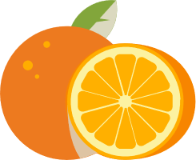

Katherine|个人博客
首页
详情
表单
计算器
登陆
橙子（水果类）

物种分类
甜橙
血橙
红橙
脐橙
冰糖橙
栽培技术
土壤管理
肥水管理
病虫防治
溃疡病
炭疽病
脚腐病
螨类
蚧类
蚜虫
潜叶蛾
基本信息
拉丁学名
Citrus sinensis
别名
金环、黄果、柑子、柳丁
界
植物界
门
被子植物门
纲
双子叶植物纲
亚纲
原始花被亚纲
目
芸香目
亚目
芸香亚目
科
芸香科
亚科
柑橘亚科
属
柑橘属
其他水果
百度网
|
新浪网
|
腾迅房产
|
找货网
|
北极绒
|
阿里巴巴
返回顶部
©Copyright 2020 guanaicheng所有
 Katherine|个人博客
Katherine|个人博客
 首页
首页 详情
详情 表单
表单 计算器
计算器